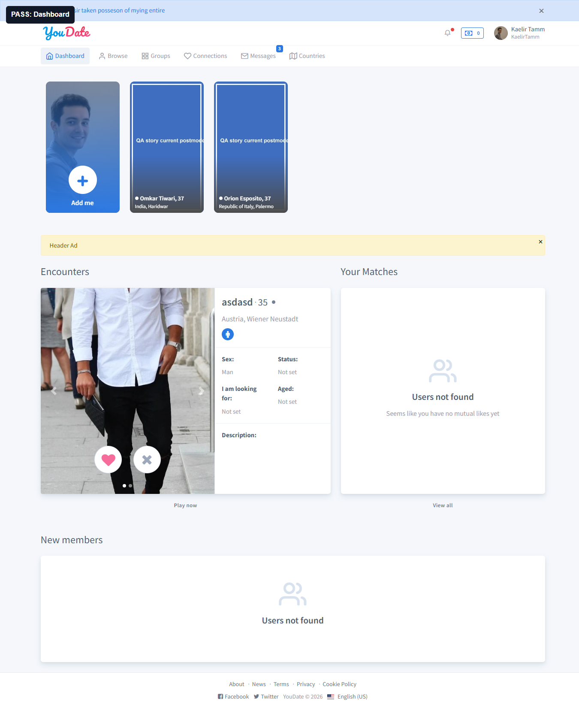
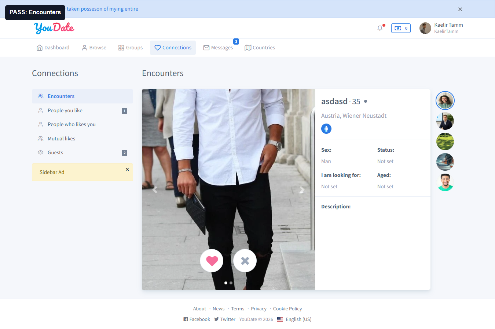
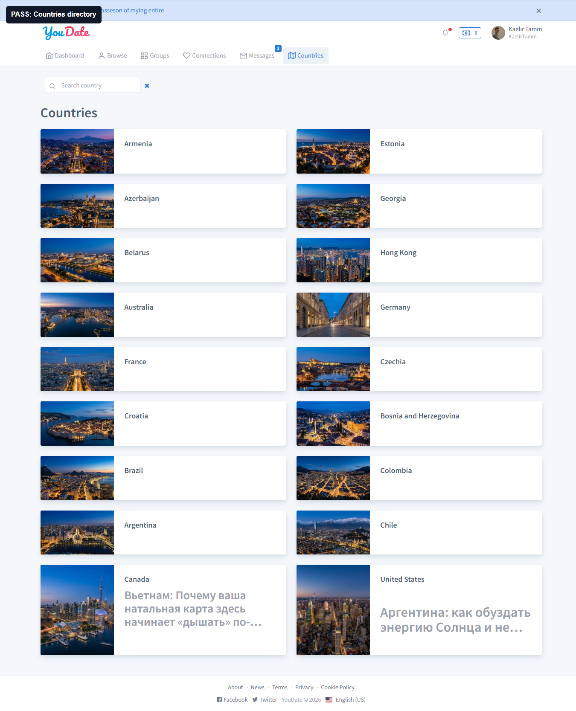
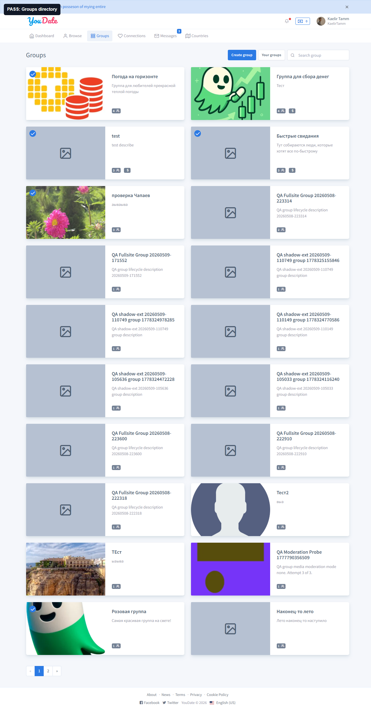

PASS
Dashboard
Проверка: авторизованный пользователь видит dashboard и discovery blocks. Результат: есть навигация, encounters, matches/new members states.
Raw evidence
Confideline QA/BA · 2026-05-09
Проверка пользовательских discovery-поверхностей авторизованным пользователем: dashboard, `/en`, browse, likes, encounters, countries, groups. Цель: доказать не только HTTP 200, а что пользователь видит контент, карточки, формы или понятное состояние.
Подтвержденных дефектов нет.
Dashboard, home, browse, likes, encounters, countries, groups.
Новых задач по этому проходу нет.
BA-рекомендация по критерию пользовательской ценности.
Новых подтвержденных дефектов нет. Проверенные discovery-поверхности открываются авторизованным пользователем, не уходят на login, не дают 404/500 и показывают контент, форму или честное пустое состояние.
Этот блок не содержит рекомендаций по развитию продукта. Рекомендации вынесены отдельно для Алексея.
| Квадрант | Зона | Наблюдение | Почему важно | Совет | Как проверить готовность |
|---|---|---|---|---|---|
| Важно, но не срочно | QA/BA evidence | Discovery-поверхности лучше тестировать отдельным продуктовым проходом, а не route inventory. | HTTP 200 не доказывает, что пользователь понимает страницу и может двигаться дальше. | Для следующих слоев добавлять сценарный критерий пользовательской ценности: что пользователь увидел и что может сделать дальше. | В каждом отчете есть PASS/FAIL по пользовательскому результату и отдельная матрица улучшений, а не только список route status. |
| Статус | Страница | Route | Что проверено | Факт |
|---|---|---|---|---|
| PASS | Dashboard | /en/dashboard | Авторизованный пользователь видит dashboard blocks. | 200, cards=3, forms=3, login redirect нет. |
| PASS | Home | /en | Главная авторизованного пользователя. | 200, dashboard content, cards=3, forms=3. |
| PASS | Browse | /en/browse | Поиск/просмотр людей. | 200, title Find People, cards=2, form=1. |
| PASS | Likes | /en/connections/likes | Входящие likes. | 200, title Likes, cards=2. |
| PASS | Encounters | /en/connections/encounters | Карточка encounter и действия. | 200, title Encounters, cards=1. |
| PASS | Countries | /en/countries | Каталог стран. | 200, h1 Countries, cards=18. |
| PASS | Groups | /en/groups | Каталог групп. | 200, h1 Groups, cards=20. |
Проверка: авторизованный пользователь видит dashboard и discovery blocks. Результат: есть навигация, encounters, matches/new members states.
Raw evidence
Проверка: `/en/browse`. Результат: страница Find People открыта, есть форма и пользовательские карточки/состояния.
Raw MD
Проверка: `/en/connections/encounters`. Результат: route из nav открывается и показывает encounter content.
Raw evidence
Проверка: `/en/countries`. Результат: каталог стран открыт, карточки стран присутствуют.
Raw evidence
Проверка: `/en/groups`. Результат: каталог групп открыт, карточки групп присутствуют.
Raw evidence